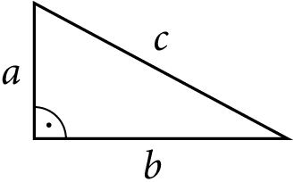

Home
Képlink
Lista
Űrlap
Táblázatok
Évszakok
Pitagorasz
PITAGORASZ TÉTEL SZÁMOLÓ

Adj meg legalább két oldalt
a. oldal
b. oldal
c. oldal
VÁLASZ EGY SZÍNT
A megadott paraméterek alapján rajzolt háromszög